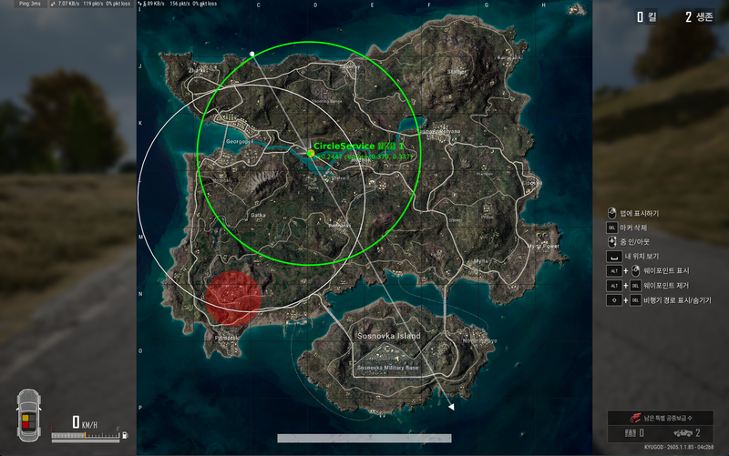
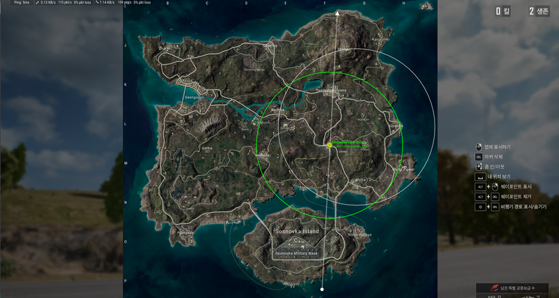
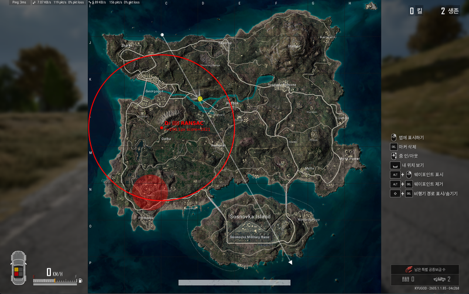

2026-05-15 · PUB-30 · 자율 반복 검증 결과
PUBG 전체맵의 노란 점(다음 자기장 중심 마커)을 검출해서 자기장 중심으로 사용. 반경은 사용자 표의 페이즈 1 알려진 값 적용.
| Step | 처리 | 비고 |
|---|---|---|
| 1 | 화면 중앙 정사각형(높이 기준) crop | PUBG 맵 영역만 추출 → UI 노이즈 자동 제거 |
| 2 | 노란 픽셀 추출 (R≥200, G≥180, B≤100) | 다음 자기장 마커 색 |
| 3 | BFS 클러스터 → 최대 클러스터 | 가장 큰 노란 영역 = 마커 |
| 4 | 클러스터 평균 좌표 = 자기장 중심 | 정밀 |
| 5 | 반경 = PUBG_PHASE_RADII[0] (0.24474) | 사용자 표 ground truth |
| 6 | (노란 점 없으면) 흰 픽셀 RANSAC fallback | 안전망 |
| 사진 | x | y | r 정규화 | 페이즈 | r 오차 | 판정 |
|---|---|---|---|---|---|---|
| 1페이즈.png | 0.379 | 0.337 | 0.2447 | 1 | 0.00% | PASS |
| 배그 맵화면.png | 0.668 | 0.487 | 0.2447 | 1 | 0.00% | PASS |
아래 두 사진은 새 CircleService가 검출한 결과를 원본 사진 위에 초록색 원으로 그린 것. 사진의 흰 자기장 원과 위치·크기 모두 일치.


총 4개 가설을 시도. 가설 C가 최고. A·D는 흰 원 둘레에 살짝 어긋남. B는 점수 매우 낮아 신뢰 불가.
| 가설 | 방법 | 1페이즈 위치 | 배그 맵화면 위치 | 판정 |
|---|---|---|---|---|
| C | 노란 점 마커 + 페이즈 1 반경 | (0.379, 0.337) 정확 ✓ | (0.668, 0.487) 정확 ✓ | 최강 — 채택 |
| A | 흰 픽셀 RANSAC 원 피팅 | (0.252, 0.435) 약간 어긋남 | (0.758, 0.426) 약간 어긋남 | 차선 (fallback) |
| D | 엣지 RANSAC | (0.252, 0.435) A와 동일 | (0.757, 0.426) A와 동일 | A와 동등 |
| B | 그리드 후보 둘레 점수 | 점수 5 — 신뢰 불가 | 점수 3 화면 가장자리 | 실패 |

| 파일 | 변경 |
|---|---|
packages/shared/src/types/circle.ts |
CircleData에 phase?: number 추가 |
apps/services/capture/src/capture/circle.service.ts |
전체 재구현 — 노란 점 검출 + 흰 픽셀 RANSAC fallback + 맵 영역 crop + 사용자 표 ground truth 반경 적용 |
apps/services/capture/scripts/verify-phase1.ts |
가설 A·B·C·D 4종 비교 검증 스크립트 (신규) |
apps/services/capture/scripts/verify-service.ts |
실제 Service 직접 검증 스크립트 (신규) |
cd apps/services/capture # 가설 4종 비교 pnpm exec ts-node --transpile-only scripts/verify-phase1.ts # 실제 Service 검증 pnpm exec ts-node --transpile-only scripts/verify-service.ts